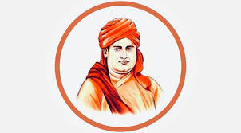

Dayananda Saraswati
Dayananda Saraswati (12 February 1824 – 30 October 1883) was an Indian philosopher, social leader and founder of the Arya Samaj, a reform movement of the Vedic dharma. He was the first to give the call for Swaraj as "India for Indians" in 1876, a call later taken up by Lokmanya Tilak.Denouncing the idolatry and ritualistic worship, he worked towards reviving Vedic ideologies. Subsequently, the philosopher and President of India, S. Radhakrishnan called him one of the "makers of Modern India", as did Sri Aurobindo.